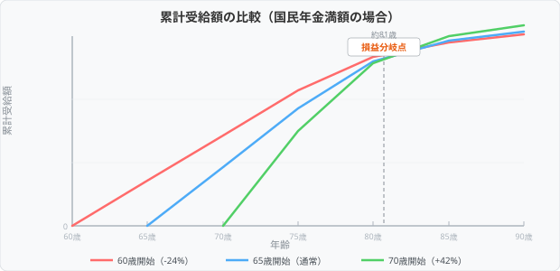

「将来、年金はいくらもらえるのだろう？」と不安に感じている方は多いのではないでしょうか。老後の生活設計を考えるうえで、年金の受給額を把握することは非常に重要です。この記事では、国民年金と厚生年金の仕組みから具体的な計算方法、繰上げ・繰下げ受給の影響まで、わかりやすく解説します。
公的年金の仕組み
日本の公的年金は「2階建て」の構造になっています。1階部分が国民年金（基礎年金）、2階部分が厚生年金です。
- 1階: 国民年金（基礎年金） - 20歳以上60歳未満のすべての人が加入する年金。自営業者、フリーランス、学生なども含まれます
- 2階: 厚生年金 - 会社員や公務員が加入する年金。国民年金に上乗せされる形で支給されます
つまり、会社員や公務員は国民年金と厚生年金の両方を受け取れますが、自営業者やフリーランスは国民年金のみとなります。この違いが、受給額に大きな差を生む原因です。
年金の受給開始年齢は原則65歳です。ただし、繰上げ受給（60歳から受け取る）や繰下げ受給（75歳まで遅らせる）も選択でき、受給開始時期によって月々の金額が変わります。
国民年金と厚生年金の違い
国民年金と厚生年金の主な違いを表にまとめました。
| 項目 | 国民年金 | 厚生年金 |
|---|---|---|
| 対象者 | 20歳以上60歳未満の全員 | 会社員・公務員 |
| 保険料 | 月額16,980円（2026年度） | 給与の18.3%（労使折半） |
| 保険料の決まり方 | 一律 | 給与に応じて変動 |
| 受給額の決まり方 | 加入月数で決定 | 加入月数 + 報酬額で決定 |
| 満額受給額（年額） | 約816,000円 | 報酬により異なる |
厚生年金の保険料率は18.3%ですが、会社と本人で折半するため、実際に給与から引かれるのは9.15%です。給与が高いほど保険料も高くなりますが、その分将来の受給額も増えるという仕組みです。
受給額の計算方法
年金の受給額は、国民年金と厚生年金でそれぞれ異なる計算方法が使われます。
国民年金（基礎年金）の計算
国民年金は非常にシンプルで、加入月数に応じた金額になります。
年間受給額 = 満額（約816,000円）× 保険料納付月数 / 480月（40年）たとえば、40年間（480月）すべて保険料を納めた場合は満額の約816,000円（月約68,000円）を受給できます。30年間（360月）しか納めていない場合は、816,000円 × 360 / 480 = 612,000円（月約51,000円）となります。
未納期間がある場合は受給額が減りますが、「追納」制度を使えば過去10年以内の未納分を後から納めることも可能です。
厚生年金の計算
厚生年金の計算はやや複雑で、報酬比例部分として以下の式で計算されます。
年間受給額 = 平均標準報酬額 × 5.481 / 1000 × 加入月数「平均標準報酬額」とは、厚生年金に加入していた期間の報酬（給与＋賞与）の平均です。正確には過去の報酬を現在の価値に換算する「再評価」が行われますが、ざっくりとした目安を知るには上記の式で十分です。
年収別の受給額目安表
会社員として40年間働いた場合の年金受給額の目安を、年収別にまとめました（国民年金＋厚生年金の合計）。
| 平均年収 | 年間受給額（目安） | 月額（目安） |
|---|---|---|
| 300万円 | 約140万円 | 約11.7万円 |
| 400万円 | 約160万円 | 約13.3万円 |
| 500万円 | 約180万円 | 約15.0万円 |
| 600万円 | 約200万円 | 約16.7万円 |
| 700万円 | 約220万円 | 約18.3万円 |
| 800万円 | 約240万円 | 約20.0万円 |
上記はあくまで目安です。実際の受給額は加入期間や報酬の変動によって異なります。正確な見込み額を知りたい場合は、「ねんきんネット」や「ねんきん定期便」で確認するのがおすすめです。
また、自営業者やフリーランスの方は国民年金のみとなるため、満額でも月約68,000円です。老後の生活費を考えると、iDeCo（個人型確定拠出年金）や国民年金基金などで上乗せを検討することをおすすめします。
繰上げ受給（減額）
年金は原則65歳から受け取りますが、60歳から64歳の間で前倒しして受け取ることもできます。これを「繰上げ受給」といいます。
繰上げ受給を選択すると、繰り上げた月数に応じて1か月あたり0.4%年金額が減額されます。この減額は一生涯続くため、慎重に判断する必要があります。
| 受給開始年齢 | 繰上げ月数 | 減額率 | 満額の場合の年額 |
|---|---|---|---|
| 60歳 | 60か月 | 24.0% | 約620,000円 |
| 61歳 | 48か月 | 19.2% | 約659,000円 |
| 62歳 | 36か月 | 14.4% | 約699,000円 |
| 63歳 | 24か月 | 9.6% | 約738,000円 |
| 64歳 | 12か月 | 4.8% | 約777,000円 |
| 65歳 | 0か月 | 0% | 約816,000円 |
60歳で繰上げ受給すると、65歳で受け取る場合と比べて24%も減額されます。たとえば満額の場合、年間で約196,000円も少なくなります。早く受け取れるメリットはありますが、長生きするほど総受給額で損をすることになります。
繰下げ受給（増額）
逆に、66歳以降に受給を遅らせる「繰下げ受給」を選ぶと、年金額が増額されます。繰り下げた月数に応じて1か月あたり0.7%増額され、最大75歳まで繰り下げることが可能です。
| 受給開始年齢 | 繰下げ月数 | 増額率 | 満額の場合の年額 |
|---|---|---|---|
| 65歳 | 0か月 | 0% | 約816,000円 |
| 66歳 | 12か月 | 8.4% | 約885,000円 |
| 67歳 | 24か月 | 16.8% | 約953,000円 |
| 68歳 | 36か月 | 25.2% | 約1,022,000円 |
| 70歳 | 60か月 | 42.0% | 約1,159,000円 |
| 75歳 | 120か月 | 84.0% | 約1,501,000円 |
75歳まで繰り下げると、受給額は65歳時の1.84倍になります。月額に換算すると、満額で約68,000円が約125,000円に増えます。
ただし、繰下げ期間中は年金を受け取れないため、その間の生活費を別途確保する必要があります。退職金や貯蓄、他の収入源がある方にとっては有効な選択肢です。
損益分岐点
繰上げ・繰下げ受給の判断で最も気になるのが「何歳まで生きれば得をするのか」という損益分岐点です。

繰上げ受給の損益分岐点
60歳で繰上げ受給した場合と65歳から受け取った場合を比較すると、約81歳が損益分岐点になります。81歳より長生きする場合は65歳から受け取ったほうが総額では得になります。
繰下げ受給の損益分岐点
70歳まで繰下げた場合と65歳から受け取った場合を比較すると、約82歳が損益分岐点です。75歳まで繰下げた場合は約87歳が損益分岐点になります。
日本人の平均寿命は男性が約81歳、女性が約87歳です。統計的に見ると、多くの方にとって繰下げ受給のほうが総受給額は多くなる可能性があります。ただし、健康状態や生活スタイル、他の収入源なども考慮して総合的に判断しましょう。
なお、繰上げ・繰下げは国民年金と厚生年金を別々に選択することも可能です。たとえば「国民年金は65歳から受け取り、厚生年金は70歳まで繰り下げる」という組み合わせも選べます。
2026年4月の制度改正ポイント
2026年4月から年金制度にいくつかの変更が予定されています。主なポイントは以下のとおりです。
在職老齢年金の見直し
65歳以上で働きながら年金を受け取る場合、給与と年金の合計が一定額を超えると年金が減額される「在職老齢年金」制度があります。2026年4月からは、この支給停止基準額が引き上げられ、より多くの方が年金の減額なしで働けるようになります。
国民年金の加入期間延長の議論
現在は60歳までの加入ですが、65歳までの延長が検討されています。まだ正式決定には至っていませんが、今後の動向に注意が必要です。延長された場合、保険料の負担が増える一方で、受給額も増加します。
マクロ経済スライドの調整
物価や賃金の上昇に合わせて年金額を改定する仕組み（マクロ経済スライド）が適用され、2026年度の年金額は前年度から引き上げとなりました。ただし、物価上昇率を完全には反映しないため、実質的な価値は緩やかに減少していく傾向にあります。
あなたの年金受給額をシミュレーションしてみましょう
年金受給額シミュレーターを使ってみるまとめ
年金の受給額は、加入している年金の種類、加入期間、報酬額、そして受給開始時期によって大きく変わります。重要なポイントを整理すると以下のとおりです。
- 会社員は国民年金＋厚生年金の2階建てで、自営業者は国民年金のみ
- 国民年金の満額は年間約816,000円（40年間加入の場合）
- 厚生年金は報酬と加入期間に応じて加算される
- 繰上げ受給は1か月あたり0.4%減額、繰下げ受給は1か月あたり0.7%増額
- 損益分岐点は繰上げが約81歳、繰下げ（70歳まで）が約82歳
まずは自分の年金見込み額を把握することが、老後の生活設計の第一歩です。当サイトの年金受給額シミュレーターを使えば、年収や加入期間を入力するだけで簡単に受給額の目安を計算できます。ぜひ一度試してみてください。